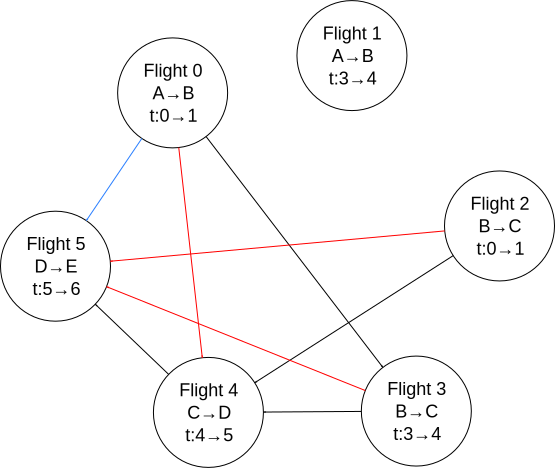

1 Transitive Closure in SQL
Transitive closure is an operation on relation tables that is not expressible in relational algebra. Transitive closure is an operation on directed graphs where the output is a graph with direct connections between nodes only when there is a path between those nodes in the input graph. The transitive closure is possible to compute in SQL by using recursive common table expressions (CTEs). SQLite has a good article on recursive CTEs, even using it for more general purpose computing.
The paper, Universality of Data Retrieval Languages, by Aho and Ullman, shows why some least fixed point operators, such as the transitive closure, are not possible with relational algebra. A fixed point operator is a operator that returns its input, which is what the transitive closure eventually does. Feeding a transitive closure output back into the function will produce the same output. I suppose it is called a "least" fixed point operator because it returns the smallest possible transitively closed graph containing the input graph.
1.1 Recursive Queries and SQLite's Examples
Here I step through the "Controlling Depth-First Versus Breadth-First Search Of a Tree Using ORDER BY" examples given in the SQLite online documentation.
1.1.1 Breadth First Search
A recursive query is one with the form:
WITH RECURSIVE under_alice(name,level) AS ( VALUES('Alice',0) UNION ALL SELECT org.name, under_alice.level+1 FROM org JOIN under_alice ON org.boss=under_alice.name ORDER BY 2 ASC ) SELECT substr('..........',1,level*3) || name FROM under_alice;
under_alice looks like a function that takes parameters, but it is
not. What look to be parameters, are actually the column names of the return
value, so org.name, under_alice.level+1 becomes under_alice.name,
under_alice.level. The last SELECT statement just formats the result from
under_alice. The under_alice query makes reference to the org table:
| name | boss |
|---|---|
| Alice | NULL |
| Bob | Alice |
| Cindy | Alice |
| Dave | Bob |
| Emma | Bob |
| Fred | Cindy |
| Gail | Cindy |
The SQLite article explains how recursive queries proceed. Stepping through
that process with the under_alice query: When recursing, two tables are
created, the recursive table and the queue. So stepping through the code:
Initially VALUES('Alice',0) is stored in the queue, and the recursive
table is empty. The part after the UNION ALL is the recursion loop. The
statement, VALUES('Alice',0), does not get re-evaluated. In the first
iteration, the top value from the queue is moved to the recursive table
and it also becomes the value that under_alice refers to in the
SELECT...FROM... statement. The org table gets joined with ('Alice',0)
ON org.boss = 'Alice', and the table returned by the SELECT...FROM...
statement gets stored at the bottom of the queue, resulting in the tables
shown in step 1. The algorithm repeats, step 2, Bob is pulled from the
queue and put into the recursive table, and the Bob record, ('Bob',1),
gets joined with the org table. The result is then stored in the queue.
This repeats until the queue is empty; which is only possible if the JOIN
returns an empty table, which is does for Fred, Gail, Cindy, and Dave.
Otherwise the query would loop infinitely. This query performs a breadth
first search.
-
Step 0
Table 1: Queue Alice 0 The recursive table is empty.
-
Step 1
Table 2: Recursive Table Alice 0 Table 3: Queue Bob 1 Cindy 1 -
Step 2
Table 4: Recursive Table Alice 0 Bob 1 Table 5: Queue Cindy 1 Dave 2 Emma 2 -
Step 3
Table 6: Recursive Table Alice 0 Bob 1 Cindy 1 Table 7: Queue Dave 2 Emma 2 Fred 2 Gail 2 -
Step 4
Table 8: Recursive Table Alice 0 Bob 1 Cindy 1 Dave 2 Table 9: Queue Emma 2 Fred 2 Gail 2 -
Step 5
Table 10: Recursive Table Alice 0 Bob 1 Cindy 1 Dave 2 Emma 2 Table 11: Queue Fred 2 Gail 2 -
Step 6
Table 12: Recursive Table Alice 0 Bob 1 Cindy 1 Dave 2 Emma 2 Fred 2 Table 13: Queue Gail 2 -
Step 7
Table 14: Recursive Table Alice 0 Bob 1 Cindy 1 Dave 2 Emma 2 Fred 2 Gail 2 The queue is empty.
1.1.2 Depth First Search
The SQLite article also gives an example of depth first search.
WITH RECURSIVE under_alice(name,level) AS ( VALUES('Alice',0) UNION ALL SELECT org.name, under_alice.level+1 FROM org JOIN under_alice ON org.boss=under_alice.name ORDER BY 2 DESC ) SELECT substr('..........',1,level*3) || name FROM under_alice;
The ORDER BY number refers to the second column in the SELECT statement. The
DESC means that elements get taken from the bottom of the queue instead of
the top; that is, the queue acts as a stack.
-
Step 0
Table 15: Queue Alice 0 The recursive table is empty.
-
Step 1
Table 16: Recursive Table Alice 0 Table 17: Queue Bob 1 Cindy 1 -
Step 2
Table 18: Recursive Table Alice 0 Cindy 1 Table 19: Queue Bob 1 Fred 2 Gail 2 -
Step 3
Table 20: Recursive Table Alice 0 Cindy 1 Gail 2 Table 21: Queue Bob 1 Fred 2 -
Step 4
Table 22: Recursive Table Alice 0 Cindy 1 Gail 2 Fred 2 Table 23: Queue Bob 1 -
Step 5
Table 24: Recursive Table Alice 0 Cindy 1 Gail 2 Fred 2 Bob 1 Table 25: Queue Dave 2 Emma 2 -
Step 6
Table 26: Recursive Table Alice 0 Cindy 1 Gail 2 Fred 2 Bob 1 Emma 2 Table 27: Queue Dave 2 -
Step 7
Table 28: Recursive Table Alice 0 Cindy 1 Gail 2 Fred 2 Bob 1 Emma 2 Dave 2 The queue is empty.
In the previous examples, some of the row orderings were random. For
example, in step 1, the row order of (Bob,1; Cindy,1) could have been
reversed; so if determinism matters, you could sub-sort the recursive query:
ORDER BY 2 DESC, 1 DESC.
1.2 Memoization Example
Here is a recursive CTE, adapted from Code Project, that computes the Fibonacci sequence.
.timer on WITH RECURSIVE nth_fibonacci(i, fiboNumber, nextNumber) AS ( SELECT 0 AS i, 0 AS fiboNumber, 1 AS nextNumber UNION ALL SELECT a.i + 1 AS i, a.nextNumber AS fiboNumber, a.fiboNumber + a.nextNumber AS nextNumber FROM nth_Fibonacci AS a LIMIT 1478 ) SELECT fiboNumber FROM nth_fibonacci ORDER BY i DESC LIMIT 10;
| Inf |
| 1.3069892237634e+308 |
| 8.07763763215622e+307 |
| 4.99225460547777e+307 |
| 3.08538302667846e+307 |
| 1.90687157879931e+307 |
| 1.17851144787915e+307 |
| 7.28360130920163e+306 |
| 4.50151316958984e+306 |
| 2.78208813961179e+306 |
| Run Time: real 0.002 user 0.001000 sys 0.001000 |
While SQLite quickly computes all expressible Fibonacci values and is smart enough to optimize away the recursion, the Fibonacci function is a popular example to show memoization. Memoization is where intermediate results are stored so that repeated calls do not have to recompute those values. An external tables can be used to memoize results. Given the following table and starting data:
CREATE TABLE Fibonacci ( i INTEGER PRIMARY KEY, fibo INTEGER ) WITHOUT ROWID; INSERT INTO fibonacci VALUES(0,0); INSERT INTO fibonacci VALUES(1,1);
The following code computes the next number in the sequence, stores it, and
returns the sequence. Repeated calls will add succeeding values to the table.
This query is a CTE but not a recursive one. Getting the Nth term,
requires repeatedly calling this WITH...INSERT statement N times. If you
add another INSERT statement after the first one, it will not see the WITH
statement; only the first INSERT knows about the WITH statement.
WITH next_fibonacci(i, fibo) AS ( -- compute the next Fibonacci number in the sequence SELECT MAX(i) + 1, SUM(fibo) FROM Fibonacci WHERE -- Get only the last two records Fibonacci.i = (SELECT MAX(i) FROM Fibonacci) OR Fibonacci.i = (SELECT MAX(i) - 1 FROM Fibonacci) ) INSERT INTO Fibonacci SELECT i, fibo FROM next_fibonacci; SELECT * FROM Fibonacci;
Combining the last two queries, the recursive CTE and the non-recursive CTE,
we get a recursive CTE that can compute the first N values; in this case,
up to the 60th value. Computing an arbitrary N would require an external
program to modify the query's N value. In this case, Emacs Org Babel is
used to set it. Filtering the nth_fibonacci output is necessary because the
CTE will return the N+1 Fibonacci value.
WITH RECURSIVE nth_fibonacci(i, prevNumber, fiboNumber) AS ( SELECT MAX(i) + 1 AS i, MAX(fibo) AS prevNumber, SUM(fibo) AS fiboNumber FROM Fibonacci WHERE Fibonacci.i = (SELECT MAX(i) FROM Fibonacci) OR Fibonacci.i = (SELECT MAX(i) - 1 FROM Fibonacci) UNION ALL SELECT prev.i + 1 AS i, prev.fiboNumber AS prevNumber, prev.fiboNumber + prev.prevNumber AS fiboNumber FROM nth_Fibonacci AS prev WHERE prev.i < $N ) INSERT INTO fibonacci SELECT i, fiboNumber AS fibo FROM nth_Fibonacci WHERE i <= $N; SELECT i, fibo FROM fibonacci WHERE i = $N;
1.3 Transitive Closure Example
Aho and Ullman give the example of finding whether one can take flights to get from one airport to another. Direct and one-stop flights are possible to find using relational algebra; however, more than one stop requires looping or recursion on intermediate output until a steady state is reached.
Given the following table of flights, where source is the flight's starting airport, dest is the destination airport, departs is the departure time, and arrives is the arrival time, each flight record represents a node on a graph.
| id | source | dest | departs | arrives |
| 0 | A | B | 0 | 1 |
| 1 | A | B | 3 | 4 |
| 2 | B | C | 0 | 1 |
| 3 | B | C | 3 | 4 |
| 4 | C | D | 4 | 5 |
| 5 | D | E | 5 | 6 |
We can get possible one-stop flights by joining the table with itself where flights arrive at or before another flight at the same airport. To get multi-stop flights, the Floyd-Warshall algorithm is used. The Floyd-Warshall algorithm uses a Boolean connection table; true for connected, false for unconnected, for each pair of nodes. The example here, instead, uses a list of connections. A connections is added to the list if there are two connections with a common node. The algorithm uses a triple nested loop that iterates through all possible node connections, including connections that start and end at the same node. There are number of possible connections, being the number of nodes. After iterations, any further iterations will not affect the output. times more iterations than there are possible connections is necessary to check all connection pairs for new connections after ones have been made in the previous iteration. It is possible to short circuit the loop if two consecutive loops produce equal output; and if there are no connections to begin with, the algorithm can be avoided all together.

Black arrows in the diagram, represent one-stop connections; think of them as running to the next gate. Red and blue arrows are found by the Floyd-Warshall algorithm. The red arrows are computed during the first iteration by looking for pairs of black arrows with common nodes. These are two-stop flights. The blue arrow is a three stop connection that is found after the red arrows are established, where the algorithm looks for red and black arrow pairs with common nodes.
However, knowing that you can get from one airport to another is not necessarily good enough. You would want to have your flight itinerary. All itineraries can be computed by slightly modifying the Floyd-Warshall algorithm.
1.3.1 Using Relational Algebra and Python
The following Python code uses relational.py and Emacs Org mode. See my previous post in the thread for more on that.
import sys sys.path.append("/home/devin/projects/relational/") from relational.relation_org import RelationOrg flights = RelationOrg(flights) flight_ids = flights.projection("id") # use Warshall's algorithm to compute indirect connections flight_num = len(flights) # add one-stop connections to the connections table connections = flights.thetajoin(flights.rename({"id":"dest_id", "source":"source_d", "dest":"dest_d", "departs":"departs_d", "arrives":"arrives_d"}), "dest == source_d and arrives <= departs_d")\ .projection("id", "dest_id").rename({"id":"source_id"}) connections_org = connections.rename({"source_id": "source_id_c", "dest_id": "dest_id_c"}) # store intermediate results, currently only have one-stop flight itineraries itineraries = connections.thetajoin(connections.projection("source_id")\ .rename({"source_id":"connection_id"}), "source_id == connection_id") itineraries_org = itineraries.rename({"connection_id":"connection_id_n", "source_id":"source_id_n", "dest_id":"dest_id_n"}) if len(connections) > 0: i = 0 while i < flight_num: # find secondary connections and remove known connections from # new_connections list so as to not insert existing connections, connections = connections.thetajoin(connections_org, "dest_id == source_id_c")\ .projection("source_id", "dest_id_c")\ .rename({"dest_id_c":"dest_id"})\ .union(connections) # add connections to the itineraries table itineraries = itineraries.thetajoin(itineraries_org,\ "dest_id == source_id_n")\ .projection("dest_id", "dest_id_n", "connection_id")\ .rename({"dest_id": "source_id", "dest_id_n":"dest_id"})\ .union(itineraries) i += 1 result = flights.product(flights.rename({"id":"dest_id", "source":"source_d", "dest":"dest_d", "departs":"departs_d", "arrives":"arrives_d"}))\ .rename({"id":"source_id"})\ .semijoin_left(connections)\ .projection("source_id", "dest_id", "source", "dest_d", "departs", "arrives_d") #return str(RelationOrg(connections)) #return str(RelationOrg(itineraries)) return str(RelationOrg(result))
flights refers to the before mentioned flights table. Initially, the
connections variable is a two-column, many-to-many relation table
describing possible one-stop connections between source_id and
dest_id. The itineraries variable adds an extra column, connection_id,
to the connections table, that being the starting connection ID. The code
only needs to iterate N times because the two inner loops are accomplished
by the thetajoin. Renaming is necessary because thetajoin does not allow
for duplicate column names. Intermediate results are aggregated into the
connections and itineraries variables by UNION-ing the known connections
with the new found connections. The only difference between connections
and itineraries is that the source_id is projected in the former, while
the dest_id is projected in the later. The result variable shows the
flight information associated with the entries in the connections table. It
is created by computing all possible connections between nodes and keeping
only those connections that exist in the connections table, joining on
dest_id and source_id.
source_id |
dest_id |
|---|---|
| 0 | 3 |
| 0 | 4 |
| 0 | 5 |
| 2 | 4 |
| 2 | 5 |
| 3 | 4 |
| 3 | 5 |
| 4 | 5 |
connection_id |
source_id |
dest_id |
|---|---|---|
| 0 | 0 | 3 |
| 0 | 3 | 4 |
| 0 | 4 | 5 |
| 2 | 2 | 4 |
| 2 | 4 | 5 |
| 3 | 3 | 4 |
| 3 | 4 | 5 |
| 4 | 4 | 5 |
source_id |
dest_id |
source |
dest_d |
departs |
arrives_d |
|---|---|---|---|---|---|
| 0 | 3 | A | C | 0 | 4 |
| 0 | 4 | A | D | 0 | 5 |
| 0 | 5 | A | E | 0 | 6 |
| 2 | 4 | B | D | 0 | 5 |
| 2 | 5 | B | E | 0 | 6 |
| 3 | 4 | B | D | 3 | 5 |
| 3 | 5 | B | E | 3 | 6 |
| 4 | 5 | C | E | 4 | 6 |
1.3.2 Using SQLite and Recursive Common Table Expressions
Given example table
CREATE TABLE Flights ( id NUMBER, source TEXT(2), dest TEXT(2), departs NUMBER, arrives NUMBER, CONSTRAINT FlightsPK PRIMARY KEY (id) ); INSERT INTO Flights(id, source, dest, departs, arrives) VALUES (0, 'A', 'B', 0, 1); INSERT INTO Flights(id, source, dest, departs, arrives) VALUES (1, 'A', 'B', 3, 4); INSERT INTO Flights(id, source, dest, departs, arrives) VALUES (2, 'B', 'C', 0, 1); INSERT INTO Flights(id, source, dest, departs, arrives) VALUES (3, 'B', 'C', 3, 4); INSERT INTO Flights(id, source, dest, departs, arrives) VALUES (4, 'C', 'D', 4, 5); INSERT INTO Flights(id, source, dest, departs, arrives) VALUES (5, 'D', 'E', 5, 6);
the transitive closure and itineraries can be generated by using recursive CTEs. The following code returns the transitive closure.
WITH RECURSIVE connections(source_id, dest_id) AS ( SELECT DISTINCT S.id, D.id FROM flights AS S JOIN flights AS D ON S.dest = D.source AND S.arrives <= D.departs ), iterations(x) AS ( SELECT COUNT(*) FROM Flights ), trans_closure(source_id, dest_id) AS ( SELECT source_id, dest_id FROM connections UNION ALL SELECT A.source_id, B.dest_id FROM trans_closure AS A JOIN connections AS B ON A.dest_id = B.source_id LIMIT (SELECT (SELECT x FROM iterations) * (SELECT x FROM iterations)) ) SELECT source_id, dest_id FROM trans_closure ORDER BY 1,2;
The connections function is just a regular CTE that results in a table of
one-stop connections. iterations caches the Flight table length. The
trans_closure CTE is recursive. The SELECT statement before the UNION ALL
creates a table that the recursive operation, the code after the UNION ALL,
iterates through. The table connections has the value
source_id |
dest_id |
|---|---|
| 0 | 3 |
| 2 | 4 |
| 3 | 4 |
| 4 | 5 |
The table is copied into a queue. One of the rows is extracted from the queue
and inserted into trans_closure's table. The trans_closure table is joined
with the connections table ON A.dest_id = B.source_id and the result is added
to the queue. The number of recursions is limited to the square of the Flights
table length. The LIMIT is not strictly needed in this example because the
Flights table is not circular.
A list of all itineraries can be produced by:
WITH RECURSIVE itineraries(id, source_id, connection_id) AS ( SELECT DISTINCT S.id, S.id, D.id FROM flights AS S JOIN flights AS D ON S.dest = D.source AND S.arrives <= D.departs ), sub_graphs(id, source_id, connection_id) AS ( SELECT id, source_id, connection_id FROM itineraries UNION ALL SELECT A.id, A.connection_id, B.connection_id FROM sub_graphs AS A JOIN itineraries AS B ON A.connection_id = B.source_id ) SELECT DISTINCT id, source_id, connection_id FROM sub_graphs ORDER BY 1,2,3;
There are only minor differences between this code and the transitive
closure query. itineraries is like connections in the previous example,
except the first node is used to group itinerary parts together. In the
recursive query, the JOIN ON is the same, dest_id is renamed connection_id
(This was done to be consistent with the relational algebra example, and it
was done there to avoid naming collisions.), and the fields returned is
changed.
1.3.3 Cyclic Graphs
If the Flights table were cyclic, the recursive queries would require a
limit or an iterator. Unlike the relational algebra example, where the
entire intermediate result was joined with the entire original table, this
query is joining one of the intermediate results with the original table, so
loops are needed. The iterative version has the advantage of being
order-able. The ORDER BY clause requires a numeric field to sort on. This
controls whether the queue virtual table is treated as a stack or a queue.
WITH RECURSIVE connections(source_id, dest_id) AS ( SELECT DISTINCT S.id, D.id FROM flights AS S JOIN flights AS D ON S.dest = D.source AND S.arrives <= D.departs ), iterations(x) AS ( SELECT COUNT(*) FROM Flights ), trans_closure(itter, source_id, dest_id) AS ( SELECT 0, source_id, dest_id FROM connections UNION ALL SELECT itter + 1, A.source_id, B.dest_id FROM trans_closure AS A JOIN connections AS B ON A.dest_id = B.source_id WHERE itter < (SELECT (SELECT x FROM iterations) * (SELECT x FROM iterations)) ORDER BY 1 ASC ) SELECT DISTINCT source_id, dest_id FROM trans_closure ORDER BY 1,2;
1.3.3.1 Another Example
Given a circular graph such as:
CREATE TABLE Circular ( source TEXT(1), dest TEXT(1), CONSTRAINT CircularPK PRIMARY KEY (source, dest) ); INSERT INTO Circular(source, dest) VALUES ('A', 'B'); INSERT INTO Circular(source, dest) VALUES ('B', 'C'); INSERT INTO Circular(source, dest) VALUES ('C', 'A');
Order might be necessary for transitive closure of cyclic graphs to ensure
FIFO execution. Otherwise an undiscovered connection might get left at the
queue's top, while loops get repeatedly stored at the bottom and popped
off. Currently, FIFO is the default if ORDER BY is not used, but that is
not guaranteed.
If there is no ORDER BY clause, then the order in which rows are extracted is undefined. (In the current implementation, the queue becomes a FIFO if the ORDER BY clause is omitted, but applications should not depend on that fact since it might change.)
WITH RECURSIVE iterations(x) AS ( SELECT COUNT(*) FROM Circular ), trans_closure(itter, source, dest) AS ( SELECT 0, source, dest FROM Circular UNION ALL SELECT itter + 1, A.source, B.dest FROM trans_closure AS A JOIN Circular AS B ON A.dest = B.source WHERE itter < (SELECT (SELECT x FROM iterations) * (SELECT x FROM iterations)) ORDER BY 1 ASC ) SELECT DISTINCT source, dest FROM trans_closure ORDER BY 1,2;